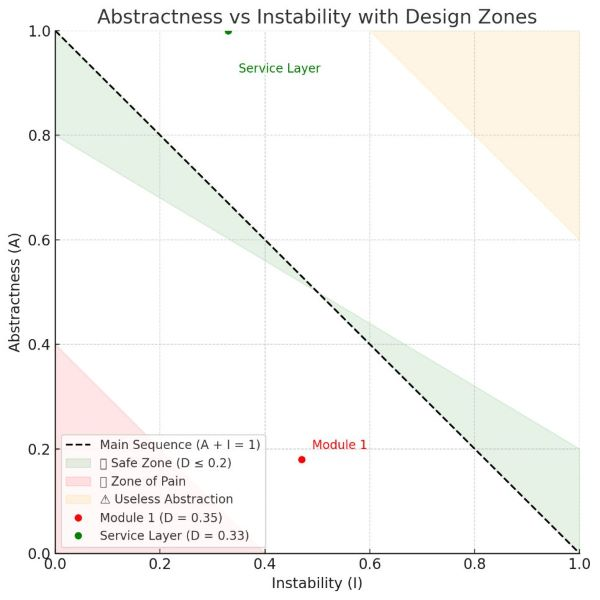

📊 Software Architecture & Code Quality Report
Tool used: Sonargraph by hello2morrow
Scope: Full project (107 source files, 19 packages, 1 module)
Date: 2025-07-05
Summary
| Metric | Status |
|---|---|
| 🔄 Cyclic Dependencies | ❌ None |
| 🧱 Structural Debt | ❌ 0 (No architectural debt) |
| ♻️ Code Duplicates | ❌ 0 |
| 🧠 Maintainability | ✅ 91.68% |
| Avg. Complexity | ✅ 2.09 (Very Low) |
| 🔗 Coupling | ⚠️ Moderate |
| 🔄 Codebase Size | ✅ 4,085 LOC, 107 files |
Size & Scope
- Lines of Code (LOC): 4,085
- Total Lines: 5,290
- Java Packages: 19
- Source Files: 107
- Types (Classes/Interfaces): 116
Cycle Metrics
| Metric | Value |
|---|---|
| Package Cyclicity | 0 |
| Component Cycle Groups | 0 |
| Critically Entangled LOC | 0 |
| Relative Cyclicity | 0.00% |
| Relative Entanglement | 0.00% |
✅ No cyclic dependencies in the architecture
Highly modular and maintainable design.
Code Analysis & Structural Quality
| Metric | Value |
|---|---|
| Code Duplicates | 0 |
| Redundant Code | 0% |
| Structural Debt Index | 0 |
| Dependencies to Remove | 0 |
| Issue Density | 0.00 |
✅ Clean codebase, no unnecessary dependencies, and no architectural violations.
Coupling & Cohesion
| Metric | Value | Notes |
|---|---|---|
| ACD (Average Component Dependency) | 4.20 | ⚠️ Slightly high |
| CCD (Cumulative Component Dependency) | 449 | Acceptable |
| NCCD (Normalized CCD) | 0.72 | ✅ Good (< 1) |
| Propagation Cost | 3.92% | ✅ Low |
| Maintainability Level | 91.68% | ✅ Excellent |
Consider reviewing high fan-out components for better modularity.
Complexity Metrics
| Metric | Value |
|---|---|
| Complex Methods | 0 |
| Avg. Nesting Depth | 0.95 |
| Avg. McCabe Complexity | 2.09 |
Very low complexity, highly readable and testable code.
A/I Chart

Abstractness vs Instability Analysis
Overview
This chart is based on principles from Robert C. Martin and visualizes the tradeoff between Abstractness (A) and Instability (I) of each module. It helps assess the internal architecture quality of a system and guides refactoring efforts.
- Abstractness (A): Ratio of abstract classes and interfaces in a module.
- Instability (I): How likely a module is to change (i.e., how many modules depend on it vs how many it depends on).
- Distance (D): Deviation from the "Main Sequence" (ideal balance between A and I), computed as
D = |A + I - 1|.
Zones
The chart is divided into three main zones:
| Zone | Description |
|---|---|
| ✅ Safe Zone | Modules near the "Main Sequence" (A + I ≈ 1). These have a good balance between abstraction and stability. |
| ❌ Zone of Pain | Modules with low A and low I. They are stable but too concrete, making changes risky and expensive. |
| ⚠ Useless Abstraction Zone | Modules with high A and high I. Highly abstract but unused, which adds unnecessary complexity. |
Example Modules
| Module | Abstractness (A) | Instability (I) | Distance (D) | Zone |
|---|---|---|---|---|
app module |
0.18 | 0.47 | 0.35 | Near Zone of Pain |
service layer |
1.00 | 0.33 | 0.33 | Slightly overabstracted |
Recommendations
- Consider refactoring
app moduleto extract interfaces or reduce fan-in to reduce architectural debt. service layeris acceptable, assuming it provides shared contracts, but should be monitored for overengineering.
Recommendations
- ✅ Keep current structure, no major refactors needed.
- 🔍 Monitor ACD and CCD in core components.
- 🔐 Integrate into CI/CD to enforce architectural compliance.
- 📊 Use this report as a baseline for future regressions.
Conclusion
The system shows excellent code quality and architectural integrity:
- No cycles
- No duplicates
- Very low complexity
- Maintainability above 90%
"Clean code, clean architecture, future-proof."